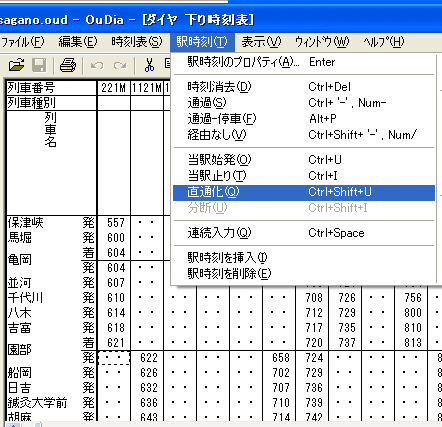
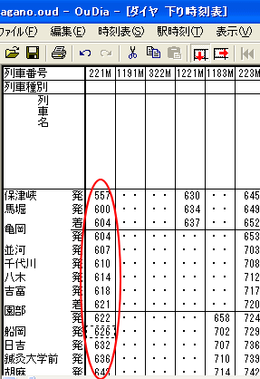
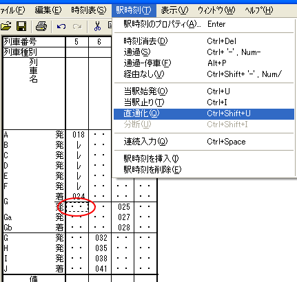
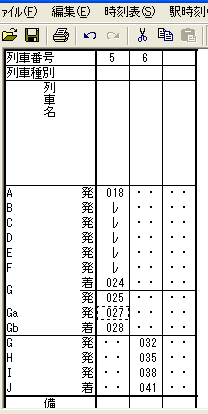
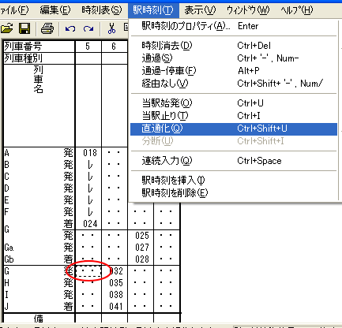
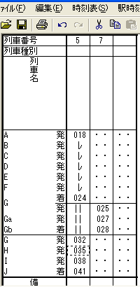

（例では、園部止めの列車 221M と、園部始発の列車 1121M を直通にしています）
１． 終着列車の終着駅にフォーカスセルを設定して、メニュー [駅時刻]-[直通化] を選択してください。

→OuDiaは、フォーカスのある列車を、始発の列車と直通化します。

支線が分岐する駅でこの機能を使う場合は、以下の特例があります。
フォーカスを、途中駅止まりの列車の支線分岐駅に移動させて、メニューコマンド[駅時刻]-[直通化]を選択してください。

→OuDiaは、フォーカスのある列車を、フォーカスのある駅を始発とする列車と直通化します。

フォーカスを、途中駅止まりの列車の、支線の下の分岐駅に移動させて、メニューコマンド[駅時刻]-[直通化]を選択してください。

→OuDiaは、フォーカスのある列車を、始発の列車と直通化します。

［１］フォーカスが、列車の終着駅よりも上の駅にある場合は、この機能は使用できません。
［２］直通化の対象になる途中駅始発列車
直通化の対象となる途中駅始発列車は、以下の条件を満たした列車です。
対象となる列車が複数ある場合は、その中でもっとも左側にある列車を直通化の対象とします。
［３］ 直通化を行った結果作成される新しい列車の、直通化した駅の駅時刻は、以下のようになります。
駅扱：途中駅止まりの列車と同じ。
着時刻：
- 途中駅止まりの列車に着時刻が指定されていた場合：その着時刻
- 途中駅止まりの列車に着時刻がなく、発時刻が指定されていた場合：途中駅止まり列車の発時刻
- 途中駅止まりの列車に着時刻も発時刻も指定されていない場合：着時刻はなし
発時刻：
- 途中駅始発列車に発時刻が指定されていた場合：その発時刻を直通化した列車の発時刻とします。
- 途中駅始発列車に発時刻がなく、着時刻が指定されていた場合：途中駅始発列車の着時刻を、新しい列車の発時刻とします。
- 途中駅始発列車に着時刻も発時刻も指定されていない場合：発時刻はなし